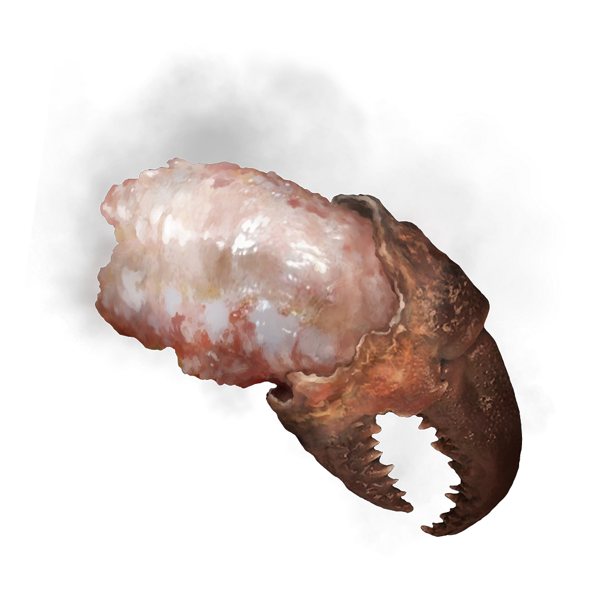

Odin Recipes
Recipes built for a Tarnish. Built for a God slayer.
You do not.
Unafraid, you open the first tome only to be met with a recipe for...boiled crab?

Underneath an image of what you can only imagine is a crab claw, you find a recipe.
Boiled Crab
To prepare this, you first need a suitable specimen. The crabs of the lakes and ponds can carry pox and diesease. One must ascertain that their crustacean will not harm them.
Ingredients
- 1 bunch of celery, cut into four pieces
- 5 pounds yellow onions, quartered.
- 8 lemons, halved.
- 5 bay leaves
- 3 TBSP cayenne pepper, plus more as needed
- 2 TBSP whole black peppercorns
- 1 giant crab
- 1 stick unsalted butter
- 1 cup of salt, blessed by Merika
For the Accoutrements
- 12 lbs of small red potatoes
- 6 to 8 ears of corn, husked and broken in half
Instructions
-
Fill a heavy-bottomed 4 gallon (15L) stockpot halfway with water.
Add the celery, onions, lemons, bay leaves, cayenne, and peppercorn to the pot.
Bring the water to a boil over high heat, then reduce the heat to low, and simmer until vegetables are soft, about 2 1/2 hours
-
Taste the stock; it should have a subtle bright vegetable flavor and taste clean, with hints of onion and celery.
Simmer the stock longer if the vegetables need to release more flavor.
-
Raise the heat to medium-high and return the stock to a boil. Add the crabs to the boiling stock, and use long tongs to press all the crabs underneath the liquid.
Cover the pot, and let the stock come back to a boil.
Once it does, cook the crabs until they are bright red-orange in color, about 15 minutes, depending on the size of the crab.
-
Turn off the heat and add the butter and salt to the pot, stirring to melt the butter and dissolve the salt. Let the crabs soak in the stock for 15 minutes so they absorb flavor. Taste a crab by peeling one and trying the meat;
if you think the meat needs more seasoning, add more cayenne and salt and soak for 5 to 10 minutes more, then taste again and repeat until the crabs are to your liking, up to 45 minutes total.
-
Using tongs, transfer the crab to a platter. Bring the stock back to a boil over high heat.
Add the potatoes, and boil for 6 minutes, then add the corn and boil the vegetables together for 4 minutes more, until the potatoes are tender.
Transfer the potatoes and corn to another platter and discard the stock.

Click a rose to go back.